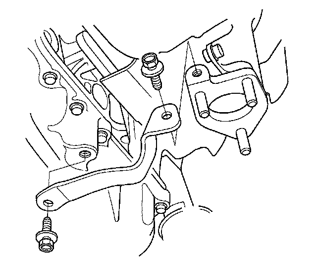
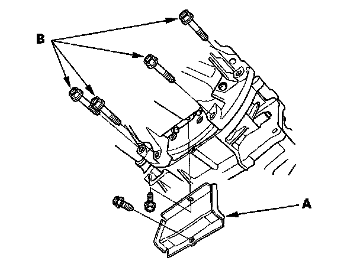
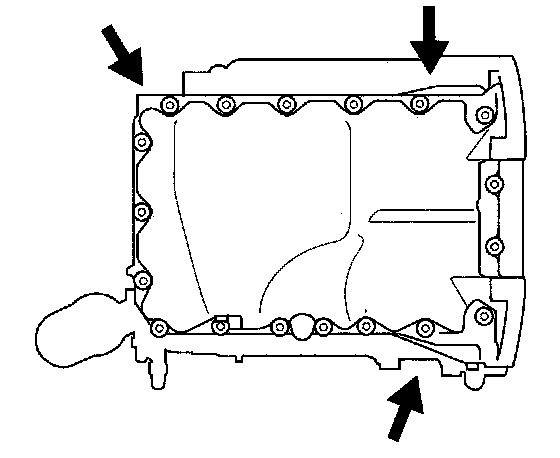

Oil Pan Removal
Oil Pan Removal1. If the engine is already out of the vehicle, go to step 6.
2. Raise the vehicle on the lift to full height.
3. Drain the engine oil.
4. Remove the splash shield.
5. Remove exhaust pipe A.
6. Remove the rear warm up three-way catalytic converter (rear WU-TWC) bracket.

7. Remove the torque converter cover (A) and the four bolts (B) securing the transmission.

8. Remove the bolts securing the oil pan.
9. Using a flat blade screwdriver, separate the oil pan from the block in the places shown.

10. Remove the oil pan.